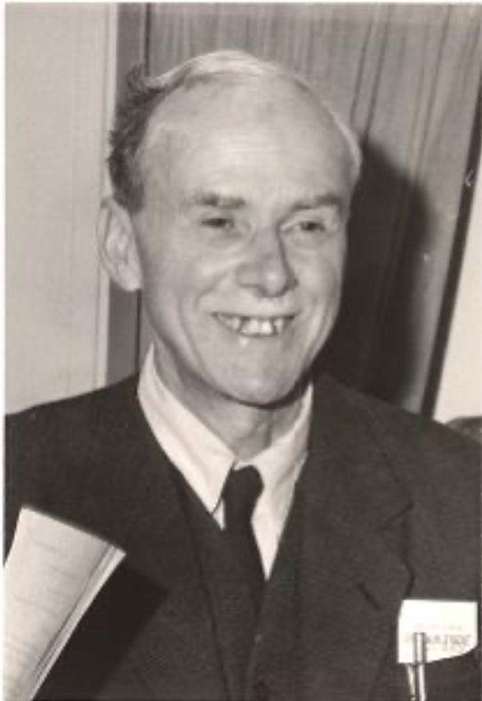
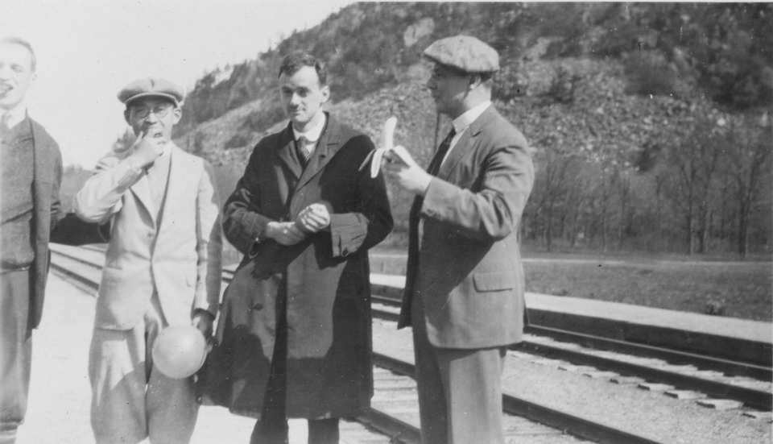
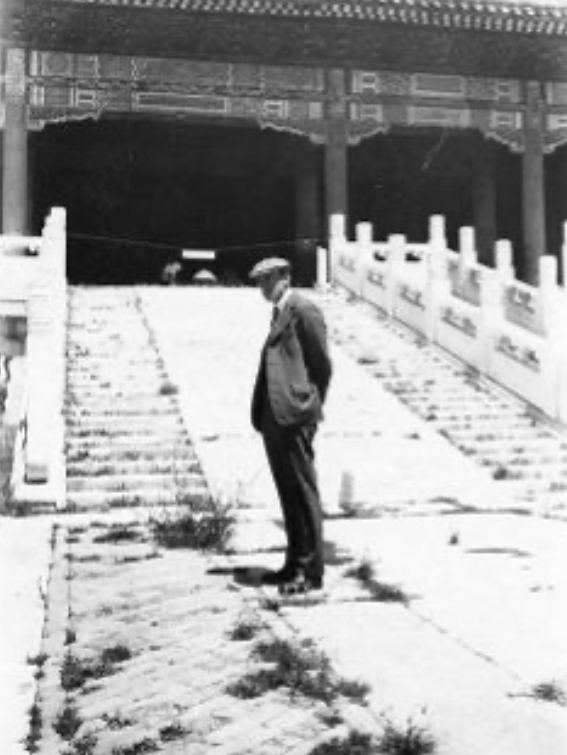

Dirac Smiling like the Mickey Mouse
He was delighted to have won the debate, and smiled, showing his eroded teeth.
Dirac in Japan
In front of the railway in Japan.
Dirac in China
In fact he had the honorary membership of the Chinese Physical Society.